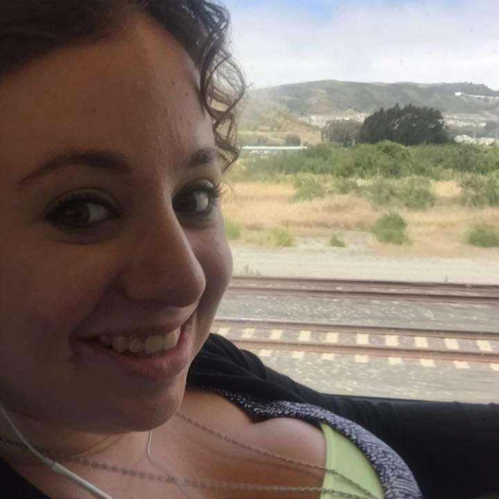

Lily's Resume

Work Experience
Palo Alto Art Center
Children's Fine Art Studio Intern
Over the course of nine weeks I aided different arts summer camps.
Along with a colleague, I oversaw campers check-in and check-out.
I helped both inside and outside the classroom; I determined and monitored break times for campers, and helped various classrooms when needed.
I also helped the foundation office with various projects, such as taking and organizing photographs of campers.
Sales Associate
I worked weekend shifts and performed opening and closing procedures.
I researched artists and products sold within the gallery shop.
I sold retail art and products to various consumers.
Emack and Bolios
Ice Cream Scooper
Served customers ice cream, worked behind the counter, delivered ice cream, performed closing store duties.
Cool Art Experiences
Skidmore College: Pro Arts Club Leader
I was a co-president from fall 2013-spring 2015.
I was a treasurer from spring 2012-spring 2013.
Pro-Arts is Skidmore's official fine arts club! It is the connection between studio artists and the rest of the college.
I collaboratd with executive board members and helped organize club activities including weekly Open Model Sessions with live model.
Tang Party (April 2014)
I curated displays for the Tang Party.
I helped select which displays would be accepted.
I helped artists set up displays the night of the event.
I was in contact with the Tang Staff and SGA staff regarding party logistics and organization.
Non Si Tratta Di Luce (It Is Not Light) (July 2014)
Together with another student I curated a one-day photographic exhibit of a four week photographic class.
I mounted the displayed photos.
Each photo was individually mounted onto its own piece of acetate; the photograph was on one side and the artist statement on the opposite side.
I helped hang the photographs in the gallery.
I helped figure out the logistical details of hanging the show. Photographs were individually hung at different heights and angles across the gallery.
Tang Party (April 2013)
I collaborated with a friend to produce a drawing installation.
We created the drawing and frame together.
We suspended and anchored the pieces from a tree and set up appropriate lighting.
I Was a Teenage Girl, Apparently (Summer 2014)
I created small drawings for use in an animated short movie by Nina Frenkel and Lyn Eliott.
Allegro (Fall 2013-Spring2014)
This was supported by Skidmore College and the National Museum of Public Art Dance Program.
I collaborated with Pro-Arts Club members to produce drawings, stencils, and design for a 5ft fiberglass slipper.
The finished slipper is on display outside the dance theater at Skidmore College.
Special Skills
Trained Mediator
New York State certified parent/teen mediator.
I was certified after attending a mediation course taught by Duke Fisher and David Karp at Skidmore College.
Computer Skills
Microsoft Office
Adobe Creative Suite
Autodesk: Maya
Education
Skidmore College
Bachelor of Science in Studio Art
Saratoga Srings, NY (May 2015)
Studio Art Centers International (SACI)
Course work: drawing, photography, serigraphy, and renaissance art history.
Florence, Italy (Summer 2014)
The International Center of Photography
Course work: "Believing is Seeing".
New York, NY (Summer 2013)
Trevor Day School
Graduated with a high school diploma.
New York, NY (June 2011)
Parsons, The New School for Design
Product Design Summer Intensive Program
Learned product design and developed a sustainable coffee cup.
New York, NY (Summer 2010)